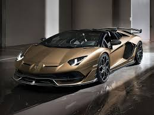

lamborghini
pagina principal
Lamborghini Aventador

Lamborghini Aventador – Información General
Tipo: Superdeportivo V12
Producción: 2011 – 2022
Fabricante: Automobili Lamborghini S.p.A. (Italia)
Sustituyó al: Lamborghini Murciélago
Sucedido por: Lamborghini Revuelto (híbrido)
Diseño y Estética
El Aventador es una bestia visual. Su diseño está inspirado en la aviación y los cazas de combate, con líneas angulosas, puertas de tijera (clásicas de los Lambo V12), y una presencia agresiva que impone respeto desde cualquier ángulo. Su carrocería está construida en fibra de carbono para máxima rigidez y ligereza.
Motor y Rendimiento
Motor: 6.5 litros V12 atmosférico (no turbo)
Potencia: Desde 700 hasta 780 CV según la versión
Par motor: Hasta 720 Nm
Transmisión: Automática ISR (7 velocidades)
Tracción: Total (AWD)
0–100 km/h: 2.8 – 2.9 segundos
Velocidad máxima: 350+ km/h Este V12 es un motor desarrollado totalmente por Lamborghini, con un sonido brutal y característico.
Tecnología y Dinámica
Sistema de suspensión Push-Rod (inspirado en la F1)
Dirección trasera activa en versiones S y SVJ
Aerodinámica activa (ALA – Aerodinamica Lamborghini Attiva) en el Aventador SVJ
Pantalla digital personalizable, sistema de infoentretenimiento con navegador, fibra de carbono y Alcántara en el interior
Versiones del Aventador
1. Aventador LP 700-4 – Modelo base (2011)
2. Aventador Roadster – Versión descapotable
3. Aventador S – Mejoras en dinámica, dirección trasera
4. Aventador SV (SuperVeloce) – Más potencia, menos peso
5. Aventador SVJ – Versión extrema, récord en Nürburgring
6. Aventador Ultimae – Edición final limitada (780 CV)
Precio aproximado (nuevo):
Entre 400,000 y 600,000 USD, dependiendo de la versión y configuración.
Dato curioso:El Aventador SVJ logró un tiempo de 6:44.97 en Nürburgring, convirtiéndose en su momento en el auto de producción más rápido en ese circuito.